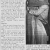
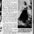
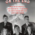

This is P.M.Bryant's Typepad Profile.
Join Typepad and start following P.M.Bryant's activity
P.M.Bryant
Proud Democrat. Classic Hollywood enthusiast.
Recent Activity
Claudette Colbert, Director?
A few weeks back, Bright Lights Film Journal published an article of mine—the first of my writings on classic Hollywood that I have published elsewhere. Claudette Colbert, Director? The untold story of how the screen comedy queen of the 1930s and ‘40s nearly become one of very few women to... Continue reading
Posted Mar 22, 2025 at Let Yourself Go ... To Old Hollywood
Comment
0
Ida Lupino photo with soldier Gustave Ahlman, 1943
Reader John Ahlman has generously shared a historic family photo for us to post here. Here is a snapshot of his father, Gustave Ahlman, with Ida Lupino at Camp Callan, San Diego in 1943 during World War 2. Gustave Ahlman was in special services, part of a group in charge... Continue reading
Posted Feb 27, 2025 at Let Yourself Go ... To Old Hollywood
Comment
0
Does Jack Warner's Story About Ida Lupino on They Drive By Night Have Any Credibility?
Warner Brothers studio chief Jack Warner relates a curious story about actress Ida Lupino in his 1965 book, *My First Hundred Years in Hollywood*. The story takes place during the filming of the 1940 drama *They Drive by Night*—22-year-old Ida Lupino's first film at Warner Brothers, after seven years in... Continue reading
Posted Sep 8, 2024 at Let Yourself Go ... To Old Hollywood
Comment
0
My recommendations for Ida Lupino day on TCM's Summer Under the Stars
TCM is devoting an entire day to Ida Lupino movies on Friday, August 2, as part of its annual *Summer Under the Stars* programming for the month of August. This is the first such day for Lupino since 2009. TCM normally airs from zero to two Lupino movies per month,... Continue reading
Posted Jul 31, 2024 at Let Yourself Go ... To Old Hollywood
Comment
0
The attempted pairing of Bette Davis and Ida Lupino
Bette Davis and Ida Lupino were two of the top dramatic actresses in Hollywood in the 1940s. For seven years they overlapped at the same studio—Warner Brothers—yet they had little personal interaction and never acted in a movie together. There was one film, though, where the pairing of Davis and... Continue reading
Posted Jul 29, 2024 at Let Yourself Go ... To Old Hollywood
Comment
0
Hotel for Women, Linda Darnell's launch to stardom
The [Linda Darnell centennial blogathon](https://musingsofaclassicfilmaddict.wordpress.com/2023/10/14/the-linda-darnell-blogathon-is-here/) presented an opportunity for me to learn more about this classic Hollywood star that I barely knew. At the time the blogathon was announced, I had only seen six of her movies. My favorites were *Hangover Square* (1945) and *Unfaithfully Yours* (1948). The others were... Continue reading
Posted Oct 15, 2023 at Let Yourself Go ... To Old Hollywood
Comment
5
The #LupinoFilms Project Archive - Phase 1
Three and a half years ago, I started a series of posts on Twitter going through each of the films that Ida Lupino made as an actress and director. My idea was to use this project as a distraction from the stress of the early days of the Covid pandemic,... Continue reading
Posted Oct 7, 2023 at Let Yourself Go ... To Old Hollywood
Comment
1
Joel Newton unmasked — mystery director of the thriller Jennifer (1953)
Earlier this year, the noirish gothic thriller, *Jennifer* (1953), starring Ida Lupino and Howard Duff, was given its first-ever home video release by [Imprint Films](https://viavision.com.au/shop/essential-film-noir-collection-4-imprint-collection-210-213/). This release is a pristine blu-ray—a vast improvement over the rough copies circulating in recent years. Finally we have a version in which the stunning... Continue reading
Posted Jun 4, 2023 at Let Yourself Go ... To Old Hollywood
Comment
0
The Fourth Star — Ida Lupino Takes On Television
Posted May 14, 2023 at Let Yourself Go ... To Old Hollywood
Comment
11
Double Door — Ida Lupino and Phyllis Loughton
The paths of two fascinating women from the Golden Age of Hollywood intersected very early in their careers—an intersection illustrated by this photo of three teenagers made up to portray much older women. Only one of these two women is in this picture. At center is Ida Lupino, future movie... Continue reading
Posted Apr 30, 2023 at Let Yourself Go ... To Old Hollywood
Comment
0
Tyrone Power - Movie King Says Farewell to Radio
This is a story inspired by one press photo of Tyrone Power and Ida Lupino standing at an NBC radio microphone, taken in February, 1939. The year 1939 is frequently mentioned as the best ever for Hollywood films, with legendary films such as *The Wizard of Oz* and *Gone With... Continue reading
Posted Mar 4, 2023 at Let Yourself Go ... To Old Hollywood
Comment
0
Brief review of the 1977 profile of Ida Lupino by Jerry Vermilye
*This brief book review is a contribution to the [2022 Classic Film Summer Reading Challenge](http://www.outofthepastblog.com/p/summer-reading-classic-film-book.html),, run by Raquel Stecher of the Out of the Past blog.* In 1977, Jerry Vermilye published a small booklet about Ida Lupino's career as part of a series of such booklets, Pyramid Illustrated History of... Continue reading
Posted Sep 10, 2022 at Let Yourself Go ... To Old Hollywood
Comment
1
Brief review of Lana Turner's autobiography
*This brief book review is a contribution to the [2022 Classic Film Summer Reading Challenge](http://www.outofthepastblog.com/p/summer-reading-classic-film-book.html), run by Raquel Stecher of the Out of the Past blog.* After re-watching *Ziegfeld Girl* (1941), the film that turned Lana Turner into a big star, I decided it was past time to learn more... Continue reading
Posted Aug 29, 2022 at Let Yourself Go ... To Old Hollywood
Comment
0
Index of my Ida Lupino articles
Over the last few years, I've done a substantial amount of research and writing on Ida Lupino's career. Here is a summary of the articles I've written in that time, ordered roughly chronologically by the time period they are about. There is clearly a big gap between 1949 and 1963,... Continue reading
Posted Aug 27, 2022 at Let Yourself Go ... To Old Hollywood
Comment
0
1936 article: My Daughter Ida, by Mrs. Lupino
This 1936 article offers a fascinating glimpse into Ida Lupino when she was still at a very early stage of her life and career. This article purportedly contains the words of her mother, Connie Lupino, filtered through a writer for the film magazine, *Hollywood*. It was published in the February... Continue reading
Posted Jul 24, 2022 at Let Yourself Go ... To Old Hollywood
Comment
0
Perspectives on glamour and Hedy Lamarr
A famous quote on classic Hollywood glamour photography is attributed to 1940s movie star and inventor Hedy Lamarr: >Just stand still and look stupid. Later variants expanded this to "Any girl can be glamorous. All you have to do is stand still and look stupid." (See [quoteinvestigator.com](https://quoteinvestigator.com/2017/09/12/glamour/).) Recently, I ran... Continue reading
Posted Jun 6, 2022 at Let Yourself Go ... To Old Hollywood
Comment
0
Your Soldier and Mine, by Ida Lupino, June 1944
Here is an article, written by Ida Lupino herself during the height of World War 2, about her experiences visiting with wounded veterans. Her husband at the time, Louis Hayward, had returned a few months earlier from his harrowing experience overseas at the Battle of Tarawa in the South Pacific.... Continue reading
Posted May 21, 2022 at Let Yourself Go ... To Old Hollywood
Comment
2
1950 article about Ida Lupino and Nicholas Ray on the set of On Dangerous Ground

Background: The article here describes events on the set of the movie *On Dangerous Ground* (1951), starring Ida Lupino and Robert Ryan, and directed by Nicholas Ray. The movie is referred to by its working title, *Mad With Much Heart*. Just before starting her work in this movie, Lupino had... Continue reading
Posted May 13, 2022 at Let Yourself Go ... To Old Hollywood
Comment
0
A period in the life of Ida Lupino as television director: 1963-1964
To celebrate the memory of dear departed classic film champion and [blogger](https://www.caftanwoman.com/) Patricia Nolan-Hall, for ["The Caftan Woman Blogathon"](https://www.ladyevesreellife.com/2022/05/the-caftan-woman-blogathon.html), I am covering a time in the life and career of Ida Lupino that Paddy had touched upon in her writing a few years ago. Paddy contributed an article to the... Continue reading
Posted May 5, 2022 at Let Yourself Go ... To Old Hollywood
Comment
11
1949 article on Ida Lupino's injuries from her film acting roles

This Sheilah Graham article was published shortly after Ida Lupino completed filming for the western noir film *Lust for Gold*, which is referred to by its working title of *Greed* in the article. The version below is from the Dayton Daily News, January 16, 1949—seventy-three years ago today. The headline... Continue reading
Posted Jan 16, 2022 at Let Yourself Go ... To Old Hollywood
Comment
0
Making sense of the Lupino-Bogart feud
The 1941 Warner Brothers film *High Sierra* was a landmark in the careers of its stars, Ida Lupino and Humphrey Bogart—marking a transition from years of frustration to full-fledged stardom for both. *High Sierra* provided the first starring role for Bogart in a prestige project, and it was Lupino's first... Continue reading
Posted Oct 8, 2021 at Let Yourself Go ... To Old Hollywood
Comment
2
Brief review of Greg Mitchell's book The Beginning or the End

This brief book review is a contribution to the [2021 Classic Film Summer Reading Challenge](http://www.outofthepastblog.com/p/summer-reading-classic-film-book.html), run by Raquel Stecher of the Out of the Past blog. *The Beginning or the End: How Hollywood—and America—Learned to Stop Worrying and Love the Bomb* by Greg Mitchell tells a very interesting story. It... Continue reading
Posted Sep 9, 2021 at Let Yourself Go ... To Old Hollywood
Comment
1
1937 - the year Ida Lupino's film career vaporized
This is a story from a critical, early phase of Ida Lupino's multi-decade long career in Hollywood—from a time when acting and music were her pursuits and her directing career lay far off—from a time when she was well-known, but still an up-and-comer and not yet a major star. It... Continue reading
Posted Aug 22, 2021 at Let Yourself Go ... To Old Hollywood
Comment
1
Brief review of the 1971 book Hollywood and the Great Fan Magazines
This brief book review is a contribution to the [2021 Classic Film Summer Reading Challenge](http://www.outofthepastblog.com/p/summer-reading-classic-film-book.html), run by Raquel Stecher of the Out of the Past blog. Aside from a brief introduction by the editor, the 1971 book *Hollywood and the Great Fan Magazines* is a curated collection of articles from... Continue reading
Posted Jul 31, 2021 at Let Yourself Go ... To Old Hollywood
Comment
1
Brief review of the script for the 1940 play Ladies in Retirement
This brief book review is a contribution to the [2021 Classic Film Summer Reading Challenge](http://www.outofthepastblog.com/p/summer-reading-classic-film-book.html), run by Raquel Stecher of the Out of the Past blog. *Ladies in Retirement* is an excellent play. The title doesn't quite indicate what to expect, but it could be considered a gothic thriller. Some... Continue reading
Posted Jul 11, 2021 at Let Yourself Go ... To Old Hollywood
Comment
1
More...
Subscribe to P.M.Bryant’s Recent Activity